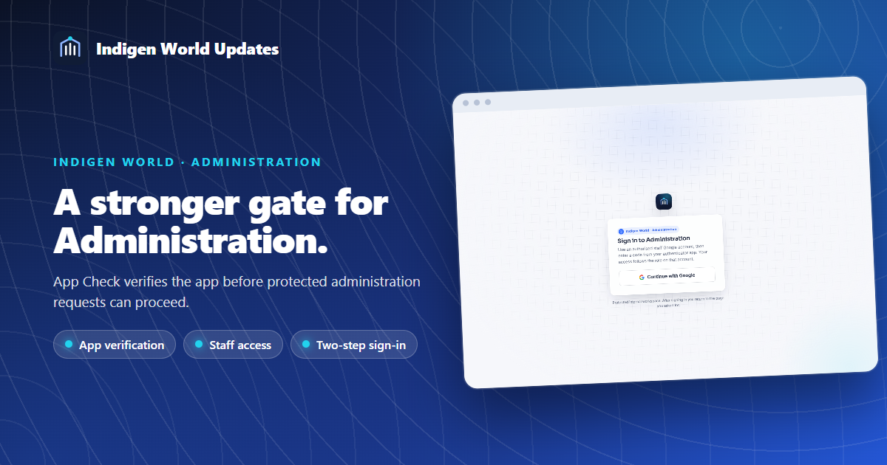
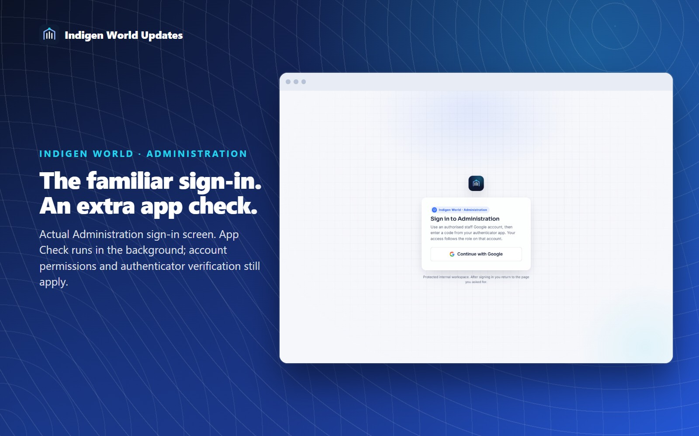

Indigen World's Administration site now checks the app before a protected staff request reaches its handler: Firebase App Check. It uses a dedicated reCAPTCHA Enterprise key registered for the Administration domains.
This helps protect the tools our staff use to manage contributions, support and project operations. A request without valid app verification is refused before the protected administration action runs.
Open Administration, sign in with your authorised staff Google account, and complete the authenticator step. App Check runs in the background. It does not grant an account a role or replace two-step verification.

The dedicated key allows the custom Administration domain and its two Firebase Hosting addresses. Protected admin callables require valid App Check tokens in deployed environments. Local Firebase emulators continue to support isolated development.
The shared project's Authentication, Firestore and Storage services remain in monitoring mode. Turning on those project-wide controls requires checking every app that uses them, including the mobile app and public website. Shared callables outside the protected admin wrapper retain their existing policies.
Availability: deployed and verified on October 21, 2026, across all three Administration addresses and 50 protected backend functions. Full staff Google sign-in and authenticator entry were not part of the release probes; account permissions and two-step verification continue to apply.